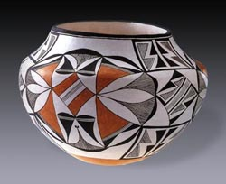

| Lucy Lewis
A Native American Potter (1897-1992)
Lucy
Lewis is regarded as the matriarch of Acoma pottery and
alongside
Maria Martinez, is one of the best known Southwestern
potters. She started making pottery around the turn of the century,
continuing a tradition dating back hundreds, if not thousands of
years.
Pottery of the Southwest was generally coil built, molded or modelled
and low-fired. Lucy derived her designs - painted on with colored
slips - from shards found in the Kivas of the pueblo and Anasazi
and Mimbres pottery she studied in the Museum of New Mexico. Her
work has been shown nationally and internationally, including at
the Smithsonian State and City Museums, Princeton University and
the Department of the Interior in Washington, D.C.
For more information on Lucy Lewis and other Native American Women
Potters, have a look at Pottery by American Indian Women
by Susan Peterson.
More Articles
More Pots of the Week
|